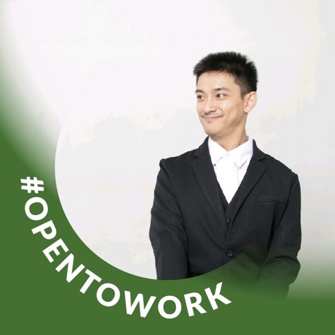

Senior Backend Engineer · Go · Distributed Systems · Security
Multiplayer game backend written in Go. The battle loop runs on goroutines, the leaderboard lives in Redis, and the domain is organised with DDD.
Go · Redis · DDD
View Sand-ai on GitHubSand-ai game backend built on Nakama (Heroic Labs, Apache-2.0): a DDD domain layer, a Nakama runtime module, and a REST facade in front of it.
Go · Nakama · DDD
View sonz.AI on GitHubIdempotent, fault-tolerant interbank transfer service. SAGA orchestration, a double-entry ledger, a transactional outbox and a circuit breaker around the bank calls.
Go · PostgreSQL · NATS JetStream · Redis
View flip-style-transfer-engine on GitHubResumable bulk email sender with a bounded worker pool, rate limiting, dedup, a dead-letter queue and checkpoint resume. Benchmarked at 1 million emails in 21.1 seconds against a mock backend; after a kill -9 at 446,574 sends, a rerun resumed from the checkpoint with no duplicates.
Go · SMTP · SES
View emailblast on GitHubMulti-tenant JSON entry API on Cassandra: one table per query, timeuuid clustering, logged-batch writes, and DDD layers kept apart.
Node.js · Cassandra · Docker
View js-data-entry on GitHubGo API for sales analytics on the Chinook dataset. Median, mode and share of total are computed with window-function SQL, documented with Swagger.
Go · MySQL · Swagger
View analyze on GitHubLaravel 10 warehouse and production backend: recipes, production runs, purchase and sales orders, stock history, and RabbitMQ events on every stock movement.
PHP · Laravel · RabbitMQ
View warehouse-with-implement-rabbitmq on GitHubLaravel 9 skeleton organised by Domain-Driven Design: a domain layer with value objects and actions, with framework code moved out to infrastructure.
PHP · Laravel · DDD
View Laravel-9-DDD-boilerplates on GitHubSecurity scanning platform that orchestrates Trivy, Nuclei, Gitleaks, ZAP and SQLMap, then runs AI analysis over the findings.
Go · gRPC · Docker
View automaton-sec on GitHubThreat detection engine that spots brute force, SQL injection, XSS, path traversal, scanners and HTTP floods. Ingests from journald, file tailing and HTTP, and responds automatically through UFW, nftables or Cloudflare. Prometheus metrics, offline-first storage to MinIO.
Go
View mini-siem-api on GitHubConcurrent log-shipping worker for mini-siem-api: tails logs, normalizes events, and delivers them at least once through a persistent spool.
Go
View worker-siem on GitHubRed vs. Blue CTF lab covering cookie reuse and MFA bypass. Runs as a Docker Compose stack on Proxmox, with a Node.js target, an XSS path and log forensics for the blue team.
Docker Compose · Proxmox · Node.js
View cyber-range-75 on GitHubRecognises Indonesian sign language (BISINDO and SIBI) from a camera feed to help deaf users communicate.
Python · MediaPipe · TensorFlow
View app_disabilitas_isyarat_ai on GitHubAssistive application for visually impaired users, part of the work behind disabilitasku.id.
Python
View app_disabilitas_mata_ai on GitHubFree, offline-capable AAC board for non-verbal people. Tap a picture and the app speaks it.
TypeScript
View tap-to-talk on GitHubMulti-agent wealth advisor assistant: anomaly detection, prioritized recommendations, a human review step, and long-term memory.
Python · SQLite / ScyllaDB
View wealth-advisor on GitHubNo projects in this category yet.
I've been writing backends since 2014, starting with game servers while studying Computer Science at Udayana University. Today I work mostly in Go on distributed systems, with a security background in SOC tooling, a SIEM for a regional government, and a DevSecOps scanning platform.
Since 2022 I run Sarana Technology and work as principal engineer or tech lead for product, AI and public-sector clients. I'm also the founder of disabilitasku.id, an accessibility platform for people with disabilities in Indonesia.
Independent software consultancy. I take contracts as principal engineer or tech lead; the engagements below run through it.
Education: Bachelor of Computer Science (S1 Teknik Informatika), Udayana University, 2013 – 2018